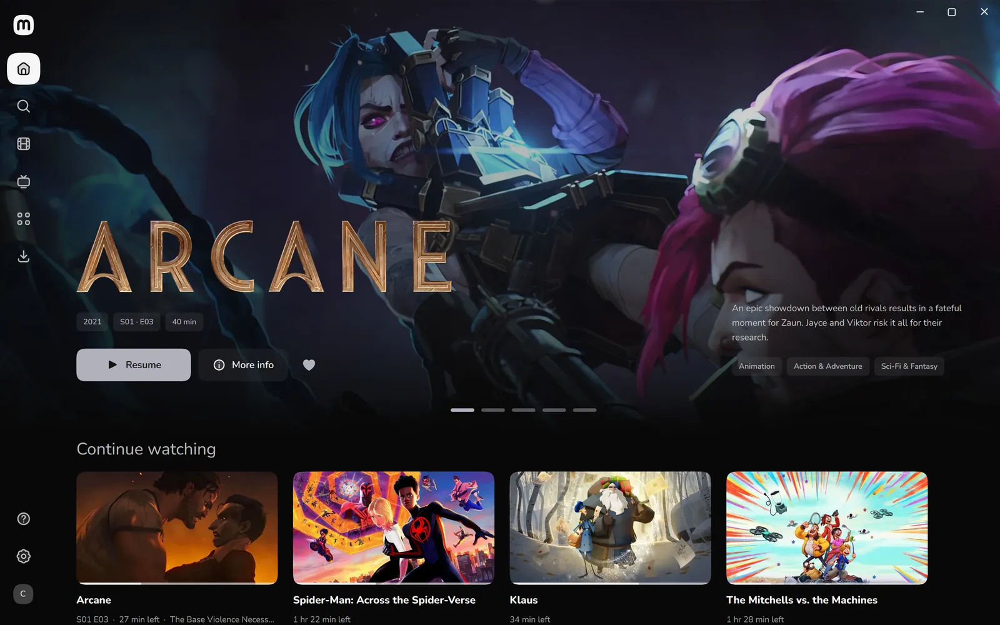
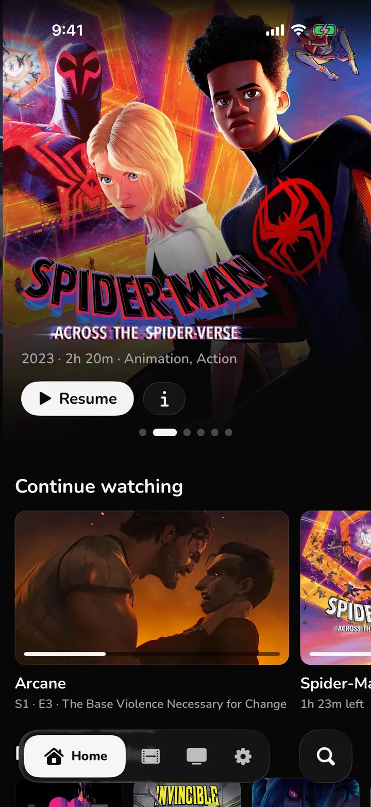
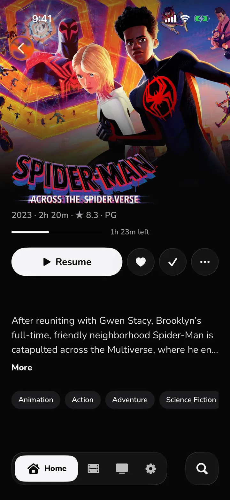
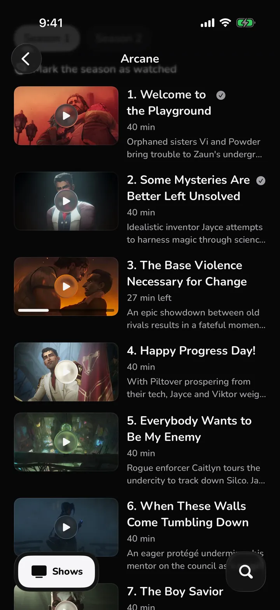
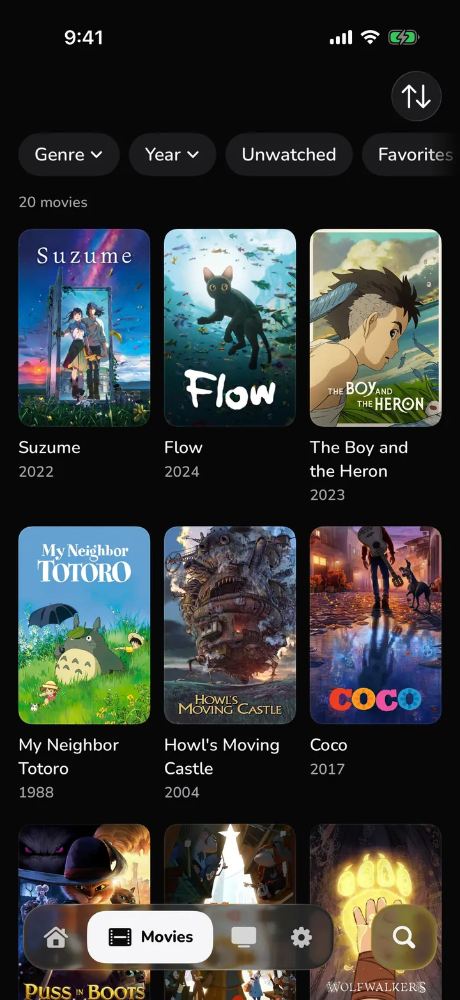
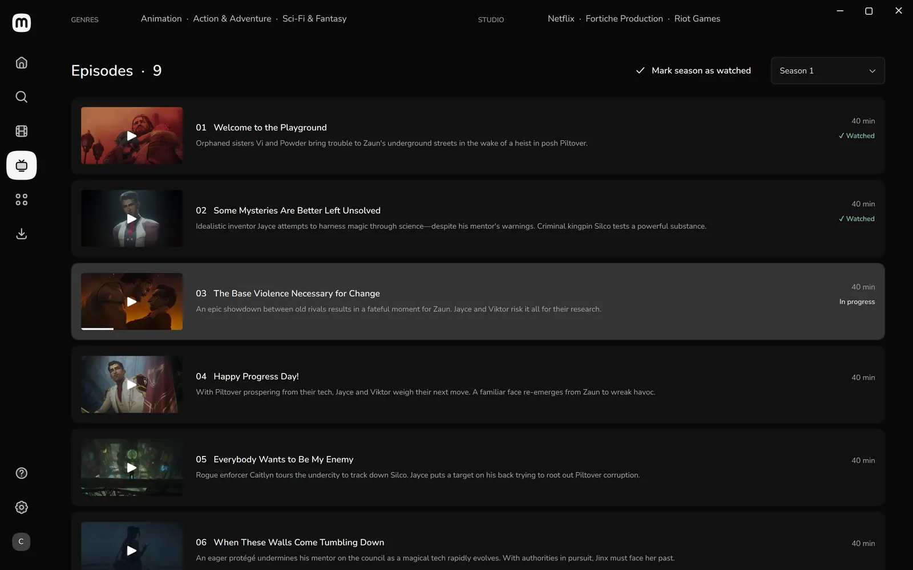
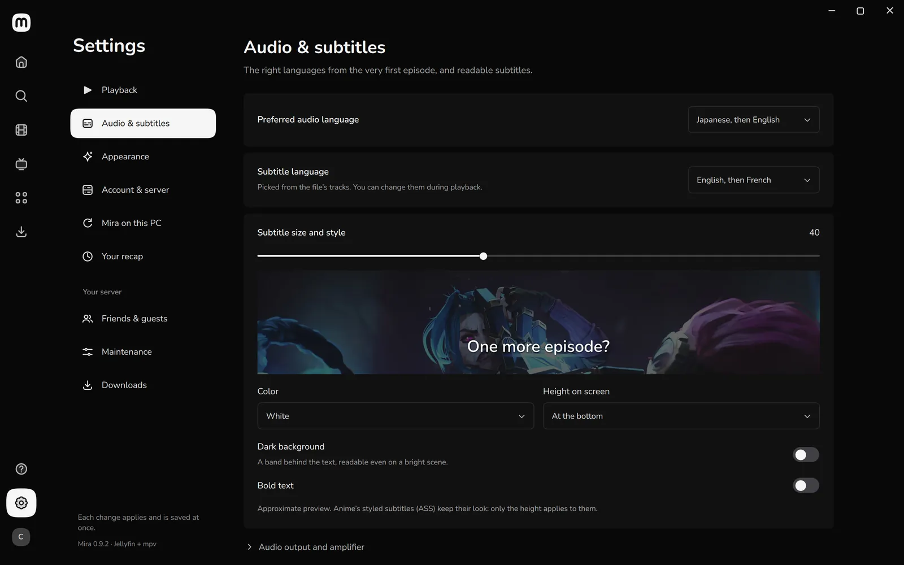
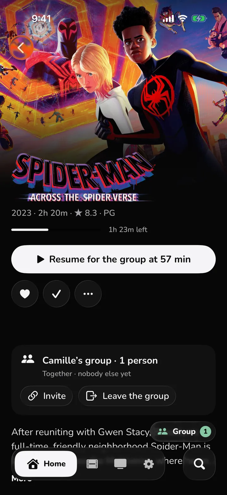
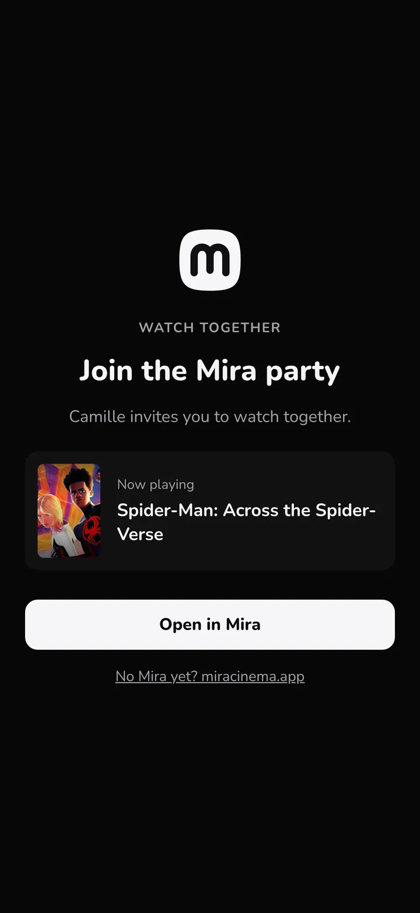

Ton serveur, de partout.
Tailscale est intégré à Mira pour Windows, Mac et iPhone : aucune app de VPN à installer.
Ce navigateur n’a pas lu la présentation. La télécharger (MP4, 15 Mo).
Un client Jellyfin gratuit pour Windows, Mac et iPhone.
Mira pour Windows et Mac : ta bibliothèque Jellyfin avec ses affiches, chaque fichier lu tel quel.

Mira pour iPhone et iPad, une vraie app : ton Jellyfin chez toi et ailleurs, avec Tailscale intégré. Installée avec AltStore, sans passer par l’App Store.




Arrête sur le PC, reprends sur le téléphone là où tu en étais. Intros passées, saisons marquées comme vues.

Sous Windows et Mac, Mira lit avec mpv, dans sa propre fenêtre. Choisis l’audio et les sous-titres une fois : Mira s’en souvient pour chaque série.

Envoie le lien de ta party. Tes amis la rejoignent dans Mira, sans compte, même avec un autre Jellyfin, et Mira garde tout le monde à la même seconde.


Tailscale est intégré à Mira pour Windows, Mac et iPhone : aucune app de VPN à installer.
Mira pour Windows l’installe, l’ouvre à ta maison seulement, et prépare ton iPhone en un clic.
Pas de compte Mira, aucune mesure d’audience, et le code est ouvert.
Windows 10 ou 11, x64
InstallateurApple silicon, macOS 15 ou plus récent
Image disquebrew install --cask sasou-web/mira/miraGuide
iOS 26 ou plus récent, avec AltStore
Installer avec AltStoremiracinema.app/altstore.jsonGuide
Fichiers Windows pas encore signés : SmartScreen peut demander une confirmation. Empreintes SHA-256 dans chaque release.